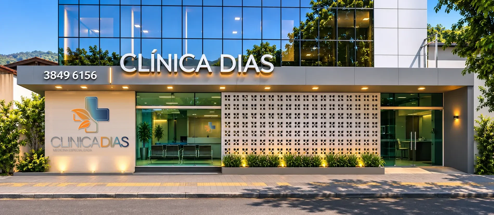
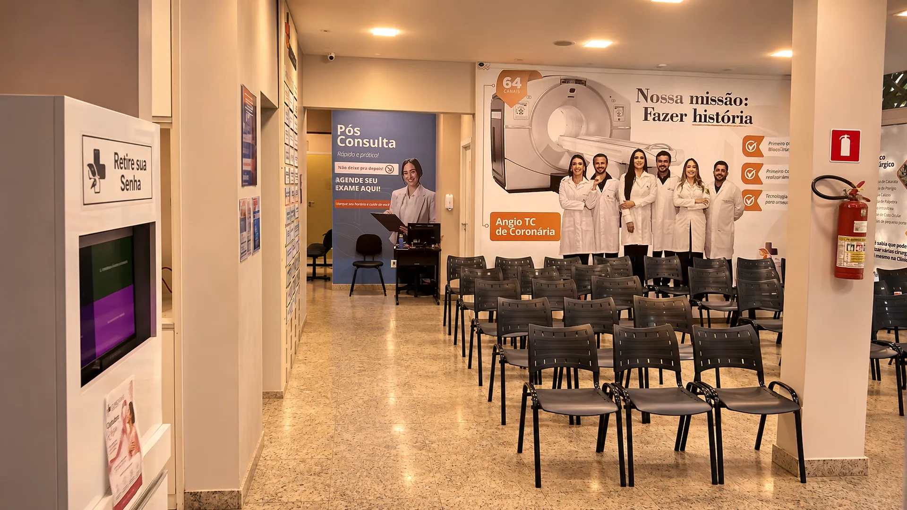

Medicina especializada desde 2010
Cuidado de especialista perto de casa, em Timóteo, Coronel Fabriciano e Ipatinga.
29 especialidades, da clínica geral à cardiologia, com agendamento por telefone.
Unidades
Três endereços no Vale do Aço. Ligue para a unidade mais perto de você.
-

Recepção 1 · Rua 128 
Portaria 2 · Av. Treze 1 / 2Timóteo
Unidade principal, com duas entradas: a recepção da Rua Cento e Vinte e Oito, com estacionamento, e a Portaria 2, pela Avenida Treze.
- Endereço
- Rua Cento e Vinte e Oito, 14 · Santa Maria
- Horário
- Segunda a sexta, das 8h às 18h
- Telefone
- (31) 3849-6156
-

Rua Pedro Nolasco, 107 Coronel Fabriciano
No centro da cidade. Ligue para saber os horários e as especialidades atendidas nesta unidade.
- Endereço
- Rua Pedro Nolasco, 107 · Centro
- Telefone
- (31) 99760-0755
-

Avenida Brasil, 700 Ipatinga
Na esquina da Avenida Brasil, ao lado da Drogaria Popular.
- Endereço
- Avenida Brasil, 700 · Iguaçu
- Horário
- Das 8h às 18h
- Telefone
- (31) 99745-4281
A clínica
Fundada em 2010 pelo cardiologista Douglas Lourenço Dias, para trazer a medicina especializada para perto das famílias de Timóteo e região.
- Sócio-fundador
- Dr. Douglas Lourenço Dias, cardiologista
- Formação
- Medicina pela Faculdade de Medicina do Vale do Aço (FAMEVAÇO), 2008
- Especialista
- Título em Cardiologia pela Sociedade Brasileira de Cardiologia (SBC)
- Pós-graduação
- Emergências Clínicas e Nutrologia
- Atende
- Cardiologia clínica e ecocardiografia

- 16anos em Timóteo
- 29especialidades
- 3unidades no Vale do Aço
- 16convênios e cartões
Especialidades
29 especialidades médicas e terapêuticas. Toque no nome para ler o que cada uma cuida.
Por dentro
Conheça o caminho antes de chegar: da portaria à recepção, da sala de espera aos consultórios.
Um passeio em 3D feito a partir da planta da clínica. Role a tela para andar e toque nos pontos para ver o que tem em cada lugar.
Entrar no passeio
Convênios
16 planos e cartões aceitos. Na hora de agendar, a equipe confirma a cobertura do seu plano.
- Abertta Saúde
- Bradesco Saúde
 CardFácil
CardFácil- CardFácil Empresarial
 Cassi · Banco do Brasil
Cassi · Banco do Brasil Cemig Saúde
Cemig Saúde- Cenibra
 Copass Saúde
Copass Saúde PASA · Vale
PASA · Vale Polícia Militar
Polícia Militar Saúde Caixa
Saúde Caixa SulAmérica
SulAmérica Usisaúde
Usisaúde- AAPIAAPI
 AAPT
AAPT- UnipassUnipass
A Clínica Dias é credenciada ao CardFácil, cartão de benefícios para você e sua família.